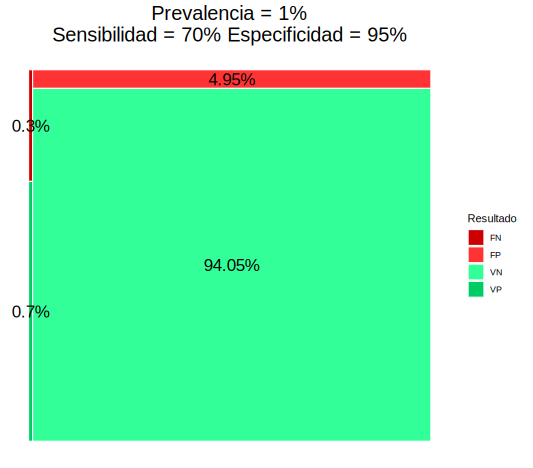
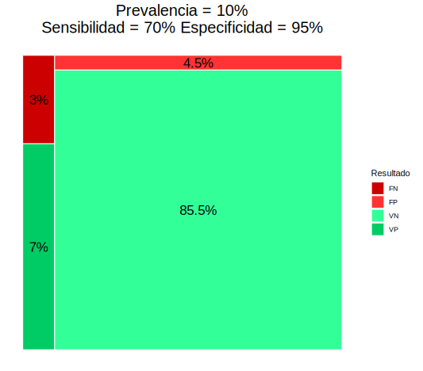

<!DOCTYPE html>
<html lang="en">
  <head>
    <meta charset="utf-8" />
    <meta name="viewport" content="width=device-width, initial-scale=1.0, maximum-scale=1.0, user-scalable=no" />

    <title>Fundamentos probabilísticos de la Epidemiología</title>
    <link rel="shortcut icon" href="./favicon.ico"/>
    <link rel="stylesheet" href="./dist/reveal.css" />
    <link rel="stylesheet" href="./dist/theme/black.css" id="theme" />
    <link rel="stylesheet" href="./css/highlight/monokai.css" />
    <link rel="stylesheet" href="./_assets/bootstrap-light.css" />
    <link rel="stylesheet" href="./_assets/custom.css" />

  </head>
  <body>
    <div class="reveal">
      <div class="slides"><section  data-markdown><script type="text/template">

<!-- .slide: data-background="./img/virus.jpg" -->

# Fundamentos probabilísticos de la Epidemiología:<br/>Riesgos y diagnóstico de enfermedades

<div style="text-align:center; text-shadow: 2px 2px 3px #000000;">
<b>Alfredo Sánchez Alberca</b><br/>
(<a href="mailto:asalber@ceu.es">asalber@ceu.es</a>)<br/>
<a href="http://aprendeconalf.es">http://aprendeconalf.es</a>
</div>
</script></section><section ><section data-markdown><script type="text/template">
## ¿Qué es la Epidemiología?

Epidemiología viene Griego: Epi (sobre), demos (gente) y logos (estudio), es decir, el estudio de lo que le ocurre a las poblaciones.

> En el ámbito de la salud pública, la **Epidemilogía** es una rama de la Medicina que se encarga del estudio de la distribución y las causas de eventos relacionados con la salud (normalmente enfermedades) en las poblaciones, y la aplicación de este estudio para controlar problemas públicos de salud.


</script></section><section data-markdown><script type="text/template">
## La Epidemiología está de moda


</script></section><section data-markdown><script type="text/template">

</script></section></section><section  data-markdown><script type="text/template">
## Algunos descubrimientos históricos

- En 1950 la epidemiología detectó un mayor riesgo de cáncer de pulmón entre los fumadores.
- En los 70 se observó que el ejercicio físico y una dieta sana reducían el riesgo de sufrir un infarto.
- En los 80 se observó que el riesgo de contraer el HIV aumentaba con ciertas prácticas sexuales y con el consumo de algunos tipos de drogas.
</script></section><section  data-markdown><script type="text/template">
## Índices epidemiológicos basados en probabilidades

<div class="container"> 
<div class="col" data-markdown> 
<h3>Riesgos</h3>

- Prevalencia
- Incidencia
- Riesgo y Odds
- Riesgo/Odd relativo
</div>

<div class="col" data-markdown> 
<h3>Test diagnósticos</h3>

- Sensibilidad
- Especificidad
- Valores predictivos
</div>
</script></section><section ><section data-markdown><script type="text/template">
## El concepto de probabilidad

> **Definición clásica (Laplace)** $$P(E)=\frac{|E|}{|\Omega|}=\frac{\mbox{Casos favorables a $E$}}{\mbox{Casos posibles}}$$

> **Definición frecuentista** $$P(E)\approx f_E = \frac{n_E}{n}=\frac{\mbox{Frecuencia absoluta del evento}}{\mbox{Tamaño muestral}}$$

$$0\leq P(E)\leq 1$$
</script></section><section data-markdown><script type="text/template">
## El concepto de probabilidad

**Ejemplo** En una población con 1000 personas hay 160 que tienen gripe $G$, entonces

$$P(G) = \frac{160}{1000} = 0.16 \Rightarrow 16\\%$$
</script></section><section data-markdown><script type="text/template">
## Interpretación de una probabilidad

La probabilidad mide la verosimilitud de un suceso. 

De manera informal, se puede decir que la probabilidad mide la creencia o la confianza que tenemos en la ocurrencia de un suceso. 

- $P(E) = 0 \Rightarrow$ Mínima verosimilitud 
- $P(E) = 0.5 \Rightarrow$ Verosimilitud media (máxima incertidumbre)
- $P(E) = 1 \Rightarrow$ Máxima verosimilitud


</script></section><section data-markdown><script type="text/template">
## El concepto de Odds

> $$O(E)=\frac{\mbox{Nº nuevos casos con $E$}}{\mbox{Nº casos sin $E$}}=\frac{P(E)}{P(\overline E)}$$

<i class="fa fa-exclamation-triangle" style="color:#ff9900;"></i> Un odds puede ser mayor que 1.

**Ejemplo** En una población con 1000 personas hay 160 que tienen gripe $G$, entonces

$$O(G) = \frac{160}{840} = 0.19$$
</script></section><section data-markdown><script type="text/template">
## El concepto de Odds

Los odds se utilizan mucho en las apuestas.

**Ejemplo** Te apuesto 10 contra 5 a que mi caballo gana la carrera.

$$O(G) = \frac{10}{5} = 2$$
</script></section><section data-markdown><script type="text/template">
## Interpretación de un Odds

Los odds también permiten cuantificar la verosimilitud de un suceso..., pero en una escala diferente. 

- $O(E) = 0 \Rightarrow$ Mínima verosimilitud
- $O(E) = 1 \Rightarrow$ Verosimilitud media (máxima incertidumbre)
- $O(E) = \infty \Rightarrow$ Máxima verosimilitud


</script></section><section data-markdown><script type="text/template">
## Conversión de Odds a probabilidad

$$ \frac{O(E)}{1 + O(E)} = \frac{\frac{P(E)}{P(\overline E)}}{1 + \frac{P(E)}{P(\overline E)}} = \frac{\frac{P(E)}{P(\overline E)}}{\frac{P(\overline E) + P(E)}{P(\overline E)}} = P(E)$$

**Ejemplo** Te apuesto 10 contra 5 a que mi caballo gana la carrera.

$$O(G) = \frac{10}{5} = 2 \Rightarrow P(G) = \frac{2}{1+2}=0.66$$
</script></section></section><section ><section data-markdown><script type="text/template">
## Prevalencia

> La _prevalencia_ de una enfermedad es la proporción de personas que tienen la enfermedad en un momento concreto.
> $$\mbox{Prevalencia}(E) = \frac{\mbox{Nº individuos afectados por $E$}}{\mbox{Tamaño poblacional}}$$

**Ejemplo**. En una muestra de 1000 personas 150 tenían gripe. La prevalencia de la gripe es aproximadamente $$\frac{160}{1000}=0.16$$
</script></section><section data-markdown><script type="text/template">
## Incidencia o riesgo absoluto

> La _incidencia_ o _riesgo absoluto_ es la proporción de nuevos casos durante un periodo determinado (por día, por semana, por mes, etc.)
> $$R(E)=\frac{\mbox{Nº nuevos casos con $E$ en el periodo}}{\mbox{Tamaño población en riesgo al comienzo del periodo}}$$

**Ejemplo**. Al comienzo del año se tomó una muestra de 1000 personas sin gripe y al finalizar el año 80 tuvieron gripe. La incidencia de la gripe ese año fue

$$ R(E) = \frac{80}{1000} = 0.08$$
</script></section><section data-markdown><script type="text/template">
## Prevalencia vs Incidencia

|             | Tiempo  |        Casos        | Tipo estudio |
| ----------- | :-----: | :-----------------: | :----------: |
| Prevalencia | Puntual | Nuevos y existentes | Transversal  |
| Incidencia  | Periodo |     Solo nuevos     | Longitudinal |

- La prevalencia muestra el número de personas afectadas (carga de la enfermedad).
- La incidencia muestra la evolución de la enfermedad y es más útil para detectar brotes y estudiar su causa.
- La incidencia depende solo de la contagiosidad de la enfermedad, mientras que la prevalencia depende también de la duración de la enfermedad.

$$ P(E) < R(E) $$
</script></section><section data-markdown><script type="text/template">
## Algunas consideraciones en el caso el COVID

[Datos del ministerio de sanidad](https://www.mscbs.gob.es/profesionales/saludPublica/ccayes/alertasActual/nCov/situacionActual.htm)

La incidencia del COVID se suele dar sobre un periodo de dos semanas (14 días) aunque no siempre.

Los datos son poco precisos y subestiman el riesgo del COVID:

- Muchos asintomáticos no son detectados.
- La detección de casos es mediante test diagnósticos que tienen un margen de error (falsos positivos y falsos negativos)
- Se calcula dividiendo por el tamaño de la población (nuevos casos por cada 100000 habitantes) pero habría que dividir por la el tamaño de la población en riesgo (sin contar ya infectados o inmunizados).
</script></section></section><section ><section data-markdown><script type="text/template">
## Comparación de riesgos

Dos grupos:

- Grupo tratamiento $T$: Individuos expuestos a un factor.
- Grupo control $C$: Individuos no expuestos al factor.

<br/>
<br/>

<table class="colortable">
<thead>
<tr class="header">
<th style="text-align: left;"></th>
<th style="text-align: left;">Suceso<span class="math inline">$E$</span></th>
<th style="text-align: left;">No suceso <span class="math inline">$\overline E$</span></th>
</tr>
</thead>
<tbody>
<td style="text-align: left;">$T$</td>
<td style="text-align: center;"><span class="math inline">$a$</span></td>
<td style="text-align: center;"><span class="math inline">$b$</span></td>
</tr>
<td style="text-align: left;">$C$</td>
<td style="text-align: center;"><span class="math inline">$c$</span></td>
<td style="text-align: center;"><span class="math inline">$d$</span></td>
</tr>
<td></td>
</tbody>
</table>
</script></section><section data-markdown><script type="text/template">
## Riesgo relativo

> $$RR(E)=\frac{\mbox{Riesgo grupo tratamiento}}{\mbox{Riesgo grupo control}}=\frac{R_T(E)}{R_C(E)}=\frac{a/(a+b)}{c/(c+d)}$$

**Ejemplo** 
<table>
<thead>
<tr class="header">
<th style="text-align: left;"></th>
<th style="text-align: center;">Gripe $G$</th>
<th style="text-align: center;">No gripe $\overline G$</th>
</tr>
</thead>
<tbody>
<tr class="odd">
<td style="text-align: left;">Vacunados $T$</td>
<td style="text-align: center;"><span class="math inline">20</span></td>
<td style="text-align: center;"><span class="math inline">480</span></td>
</tr>
<tr class="even">
<td style="text-align: left;">No vacunados $C$</td>
<td style="text-align: center;"><span class="math inline">80</span></td>
<td style="text-align: center;"><span class="math inline">420</span></td>
</tr>
<td></td>
</tbody>
</table>

$$RR(G) = \frac{20/(20+480)}{80/(80+420)} = 0.25$$
</script></section><section data-markdown><script type="text/template">
## Interpretación del riesgo relativo

- $RR=1$ $\Rightarrow$ No hay asociación entre el suceso y la exposición al factor.
- $RR<1$ $\Rightarrow$ La exposición al factor disminuye el riesgo del suceso.
- $RR>1$ $\Rightarrow$ La exposición al factor aumenta el riesgo del suceso.


</script></section><section data-markdown><script type="text/template">
## Odds ratio

> $$OR(E)=\frac{\mbox{Odds grupo tratamiento}}{\mbox{Odds grupo control}}=\frac{O_T(E)}{O_C(E)}=\frac{a/b}{c/d}=\frac{ad}{bc}$$

**Ejemplo** 
<table>
<thead>
<tr class="header">
<th style="text-align: left;"></th>
<th style="text-align: center;">Gripe $G$</th>
<th style="text-align: center;">No gripe $\overline G$</th>
</tr>
</thead>
<tbody>
<tr class="odd">
<td style="text-align: left;">Vacunados $T$</td>
<td style="text-align: center;"><span class="math inline">20</span></td>
<td style="text-align: center;"><span class="math inline">480</span></td>
</tr>
<tr class="even">
<td style="text-align: left;">No vacunados $C$</td>
<td style="text-align: center;"><span class="math inline">80</span></td>
<td style="text-align: center;"><span class="math inline">420</span></td>
</tr>
<td></td>
</tbody>
</table>

$$RR(G) = \frac{20/480}{80/420} = 0.22$$
</script></section><section data-markdown><script type="text/template">
## Interpretación del odds ratio

- $OR=1$ $\Rightarrow$ No existe asociación entre el suceso y la exposición al factor.
- $OR<1$ $\Rightarrow$ La exposición al factor disminuye el riesgo del suceso.
- $OR>1$ $\Rightarrow$ La exposición al factor aumenta el riesgo del suceso.
</script></section><section data-markdown><script type="text/template">
## Riesgo relativo vs Odds ratio

El riesgo relativo es una comparación de probabilidades pero depende de la incidencia de la enfermedad.

La interpretación del odds ratio es más enrevesada porque es contrafactual, ya que da cuántas veces es más frecuente el suceso en el grupo tratamiento en comparación con el control, asumiendo que en el
grupo control es tan frecuente que ocurra el suceso como que no. Su ventaja es que no depende de la incidencia de la enfermedad.
</script></section><section data-markdown><script type="text/template">
## Riesgo relativo vs Odds ratio

<div class="container"> 
<div class="col"> 
<b>Muestra 1</b>
<br/>
<table>
<thead>
<tr class="header">
<th style="text-align: left;"></th>
<th style="text-align: center;">Cáncer</th>
<th style="text-align: center;">No cáncer</th>
</tr>
</thead>
<tbody>
<tr class="odd">
<td style="text-align: left;">Fumadores</td>
<td style="text-align: center;"><span class="math inline">60</span></td>
<td style="text-align: center;"><span class="math inline">80</span></td>
</tr>
<tr class="even">
<td style="text-align: left;">No fumadores</td>
<td style="text-align: center;"><span class="math inline">40</span></td>
<td style="text-align: center;"><span class="math inline">320</span></td>
</tr>
</tbody>
</table>

$$
\begin{aligned}
RR(E) &= \frac{60/(60+80)}{40/(40+320)} = 3.86
\newline
OR(E) &= \frac{60/80}{40/320} = 6
\end{aligned}
$$
</div>

<div class="col" data-markdown> 
<b>Muestra 2</b>
<br/>
<table>
<thead>
<tr class="header">
<th style="text-align: left;"></th>
<th style="text-align: center;">Cáncer</th>
<th style="text-align: center;">No cáncer</th>
</tr>
</thead>
<tbody>
<tr class="odd">
<td style="text-align: left;">Fumadores</td>
<td style="text-align: center;"><span class="math inline">60</span></td>
<td style="text-align: center;"><span class="math inline">160</span></td>
</tr>
<tr class="even">
<td style="text-align: left;">No fumadores</td>
<td style="text-align: center;"><span class="math inline">40</span></td>
<td style="text-align: center;"><span class="math inline">640</span></td>
</tr>
</tbody>
</table>

$$
\begin{aligned}
RR(E) &= \frac{60/(60+160)}{40/(40+640)} = 4.64
\newline
OR(E) &= \frac{60/160}{40/640} = 6 
\end{aligned}
$$
</div>
</div>
</script></section><section data-markdown><script type="text/template">
## Aplicación al COVID-19

- [La edad aumenta la gravedad](https://www.npr.org/sections/coronavirus-live-updates/2020/03/22/819846180/study-calculates-just-how-much-age-medical-conditions-raise-odds-of-severe-covid?t=1614095513052)
- [El riesgo de infección depende del grupo sanguíneo](https://www.aarp.org/espanol/salud/enfermedades-y-tratamientos/info-2020/tipo-de-sangre-y-riesgo-de-covid.html)
- [El déficit de vitamina D aumenta el riesgo de infección](https://medicalxpress.com/news/2021-01-vitamin-d-deficiency-covid-.html)
- [Las personas con demencia tienen mayor riesgo de infectase](https://www.sciencedaily.com/releases/2021/02/210209083524.htm)
- [El Remdesivir acelera la recuperación](https://www.nejm.org/doi/full/10.1056/NEJMoa2007764)
</script></section></section><section ><section data-markdown><script type="text/template">
## Tests diagnósticos

> Un test diagnóstico es un test usado para diagnosticar una enfermedad o descartarla.  

Normalmente producen dos resultados: positivo (+) a favor de la enfermedad y negativo (-) en contra de ella.

<table>
<thead>
<tr class="header">
<th style="text-align: left;"></th>
<th style="text-align: center;">Presencia enfermedad $E$</th>
<th style="text-align: center;">Ausencia enfermedad $\overline E$</th>
</tr>
</thead>
<tbody>
<tr class="odd">
<td style="text-align: left;">Test positivo <span class="math inline">+</span></td>
<td style="text-align: center;"><span style="color: #66ff88">Verdadero positivo $VP$</span></td>
<td style="text-align: center;"><span style="color: #fe375a">Falso positivo $FP$</span></td>
</tr>
<tr class="even">
<td style="text-align: left;">Test negativo <span class="math inline">−</span></td>
<td style="text-align: center;"><span style="color: #fe375a">Falso negativo $FN$</span></td>
<td style="text-align: center;"><span style="color: #66ff88">Verdadero Negativo $VN$</span></td>
</tr>
</tbody>
</table>
</script></section><section data-markdown><script type="text/template">
## Sensibilidad y especificidad de un test

La fiabilidad de un test diagnóstico depende de las siguientes probabilidades.

> **Sensibilidad**  
> La _sensibilidad_ de un test diagnóstico es la proporción de resultados positivos del test en personas con la enfermedad,
> $$P(+|E)=\frac{VP}{VP+FN}$$

> **Especificidad**
> La _especificidad_ de un test diagnóstico es la proporción de resultados negativos del test en personas sin la enfermedad,
> $$P(-|\overline{E})=\frac{VN}{VN+FP}$$
</script></section><section data-markdown><script type="text/template">
## Sensibilidad y especificidad de un test

**Ejemplo**

Un test de antígenos para detectar el SARS-COV-2 tiene una sensibilidad del 70% y una especificidad del 95%.

- Si aplicamos el test a 100 enfermos dará 70 positivos y 30 negativos.
- Si aplicamos el test a 100 sanos dará 95 negativos y 5 positivos.
</script></section><section data-markdown><script type="text/template">
## Fiabilidad de un test diagnóstico

La fiabilidad del test depende también de la prevalencia de la enfermedad.

**Ejemplo**. Suponiendo que la especificidad es del 70% y la especificidad es del 95% y el tamaño poblacional es 1000:

<div class="container"> 
<div class="col"> 
Prevalencia 1%
<br/>
<table class=colortable>
<thead>
<tr class="header">
<th style="text-align: left;"></th>
<th style="text-align: center;">$E$</th>
<th style="text-align: center;">$\overline E$</th>
</tr>
</thead>
<tbody>
<td style="text-align: left;">Resultado +</td>
<td style="text-align: center;">7</td>
<td style="text-align: center;">50</td>
</tr>
<td style="text-align: left;">Resultado -</td>
<td style="text-align: center;">3</td>
<td style="text-align: center;">940</td>
</tr>
<td></td>
</tbody>
</table>
</div>

<div class="col"> 
Prevalencia 10%
<br/>
<table class=colortable>
<thead>
<tr class="header">
<th style="text-align: left;"></th>
<th style="text-align: center;">$E$</th>
<th style="text-align: center;">$\overline E$</th>
</tr>
</thead>
<tbody>
<td style="text-align: left;">Resultado +</td>
<td style="text-align: center;">70</td>
<td style="text-align: center;">45</td>
</tr>
<td style="text-align: left;">Resultado -</td>
<td style="text-align: center;">30</td>
<td style="text-align: center;">855</td>
</tr>
<td></td>
</tbody>
</table>
</div>
</div>
</script></section><section data-markdown><script type="text/template">
## Fiabilidad de un test diagnóstico

**Ejemplo**

<div class="container"> 
<div class="col"> 

</div>

<div class="col"> 

</div>
</div>
</script></section><section data-markdown><script type="text/template">
## Cuándo usar un test más sensible o más específico

Utilizaremos un test sensible cuando:

- La enfermedad es grave y es importante detectarla.

- La enfermedad es curable.

- Los falsos positivos no provocan traumas serios.

Utilizaremos un test específico cuando:

- La enfermedad es importante pero difícil o imposible de curar.

- Los falsos positivos pueden provocar traumas serios.

- El tratamiento de los falsos positivos puede tener graves
  consecuencias.
</script></section><section data-markdown><script type="text/template">
## Valores predictivos de un test

> **Valor predictivo positivo**  
> El _valor predictivo positivo_ de un test diagnóstico es la proporción de personas con la enfermedad entre las personas con resultado positivo en el test,
> $$P(E|+) = \frac{VP}{VP+FP}$$

> **Valor predictivo negativo**  
> El _valor predictivo negativo_ de un test diagnóstico es la proporción de personas sin la enfermedad entre las personas con resultado negativo en el test,
> $$P(\overline{E}|-) = \frac{VN}{VN+FN}$$
</script></section><section data-markdown><script type="text/template">
## Valores predictivos

**Ejemplo**

**Ejemplo**. Suponiendo que la especificidad es del 70% y la especificidad es del 95% y el tamaño poblacional es 1000:

<div class="container"> 
<div class="col"> 
Prevalencia 1%
<br/>
<table class=colortable>
<thead>
<tr class="header">
<th style="text-align: left;"></th>
<th style="text-align: center;">$E$</th>
<th style="text-align: center;">$\overline E$</th>
</tr>
</thead>
<tbody>
<td style="text-align: left;">Resultado +</td>
<td style="text-align: center;">7</td>
<td style="text-align: center;">50</td>
</tr>
<td style="text-align: left;">Resultado -</td>
<td style="text-align: center;">3</td>
<td style="text-align: center;">940</td>
</tr>
<td></td>
</tbody>
</table>

$$VPP = \frac{7}{7+50} = 0.123$$
$$VPN = \frac{940}{3+940} = 0.997$$
</div>

<div class="col"> 
Prevalencia 10%
<br/>
<table class=colortable>
<thead>
<tr class="header">
<th style="text-align: left;"></th>
<th style="text-align: center;">$E$</th>
<th style="text-align: center;">$\overline E$</th>
</tr>
</thead>
<tbody>
<td style="text-align: left;">Resultado +</td>
<td style="text-align: center;">70</td>
<td style="text-align: center;">45</td>
</tr>
<td style="text-align: left;">Resultado -</td>
<td style="text-align: center;">30</td>
<td style="text-align: center;">855</td>
</tr>
<td></td>
</tbody>
</table>
$$VPP = \frac{70}{70+45} = 0.609$$
$$VPN = \frac{855}{30+855} = 0.966$$
</div>
</div>
</script></section><section data-markdown><script type="text/template">
## Interpretación de los valores predictivos

$$
\begin{array}{rcl}
VPP>0.5 & \Rightarrow & \mbox{Diagnosticar la enfermedad}\newline
VPN>0.5 & \Rightarrow & \mbox{Descartar la enfermedad}
\end{array}
$$
</script></section><section data-markdown><script type="text/template">
## Aplicaciones al COVID-19

- [Fiabilidad del diagnóstico por PCR](https://www.rcpjournals.org/content/clinmedicine/20/6/e209)
- [Fiabilidad del diagnóstico por el test de antígenos](https://www.cdc.gov/mmwr/volumes/69/wr/mm695152a3.htm)
- [Comparativa de test](https://academic.oup.com/ajcp/article/154/5/575/5898531)
</script></section></section><section  data-markdown><script type="text/template">
## Referencias

- [Acción matemática contra el coronavirus](http://matematicas.uclm.es/cemat/covid19/)
- [R Epidemic Consortium (RECON)](https://www.repidemicsconsortium.org/)
- [Analysis of epidemiological data using R and Epicalc](https://cran.r-project.org/doc/contrib/Epicalc_Book.pdf)
- [R resources about COVID-19](https://statsandr.com/blog/top-r-resources-on-covid-19-coronavirus/#coronavirus)</script></section></div>
    </div>

    <script src="./dist/reveal.js"></script>

    <script src="./plugin/markdown/markdown.js"></script>
    <script src="./plugin/highlight/highlight.js"></script>
    <script src="./plugin/zoom/zoom.js"></script>
    <script src="./plugin/notes/notes.js"></script>
    <script src="./plugin/math/math.js"></script>
    <script>
      function extend() {
        var target = {};
        for (var i = 0; i < arguments.length; i++) {
          var source = arguments[i];
          for (var key in source) {
            if (source.hasOwnProperty(key)) {
              target[key] = source[key];
            }
          }
        }
        return target;
      }

      // default options to init reveal.js
      var defaultOptions = {
        controls: true,
        progress: true,
        history: true,
        center: true,
        transition: 'default', // none/fade/slide/convex/concave/zoom
        plugins: [
          RevealMarkdown,
          RevealHighlight,
          RevealZoom,
          RevealNotes,
          RevealMath
        ]
      };

      // options from URL query string
      var queryOptions = Reveal().getQueryHash() || {};

      var options = extend(defaultOptions, {"transition":"convex","center":true}, queryOptions);
    </script>


    <script>
      Reveal.initialize(options);
    </script>
  </body>
</html>
